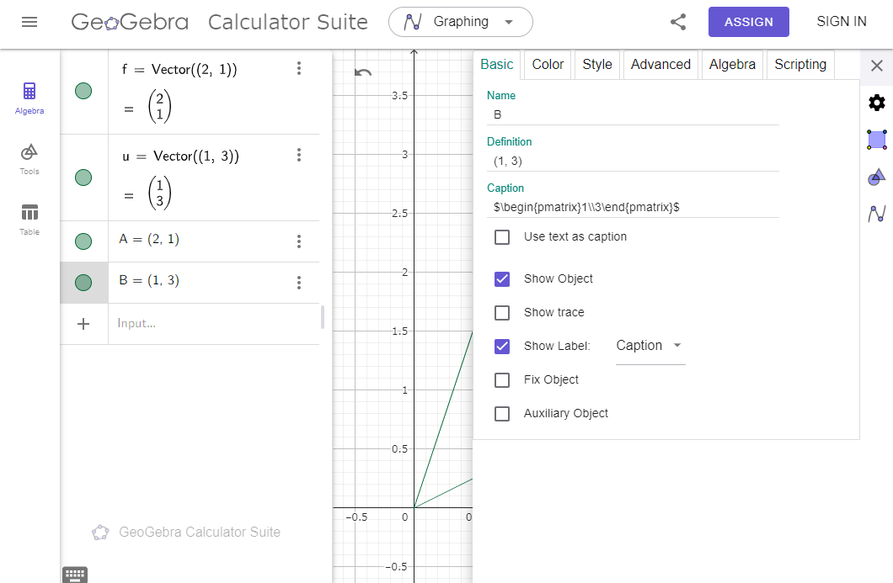

簡単にGeoGebraの使い方について確認しておきます。ここではWeb版GeoGebraを用いて説明していこと思います。(多分、アプリ版はそんな変わらないと思います。)
あと、使ってみて数時間で書いているので、紹介している方法が最適とは限りません。
基本的に左側の欄に数式を入力していって図を表示させる感じになります。
ベクトルは「Vector((a,b),(c,d))」と書くと、点\((a,b)\)から点\((c,d)\)へのベクトルが出力されます。

色とかが気になるなら、ベクトルを右クリックして少し設定をいじりましょう。


次は領域の塗りつぶしをしましょう。